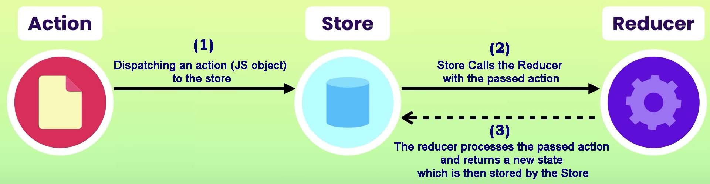

Updated ( 2020-11-08 )
MySite> Redux
| Command / Method | Description |
|---|---|
| CLI | |
| $ npm install redux | - installs redux locally |
| In Module | |
| import {createStore, combineReducers} from 'redux' | - imports the Redux store creation and the reducer combiner methods to the current module |
|
createStore(reducer:fn - reducer function takes 2 arguments state and action, it must return an object which represents the next state of the store (object spread used to return the previous state ...state) - the state argument can be set as default store state, so the store can be initiated with this default state - the action argument is received by the store.dispatch() method - adding window.__REDUX_DEVTOOLS_EXTENSION__ && window.__REDUX_DEVTOOLS_EXTENSION__() as 2nd argument allows Redux DevTools (browser extension) to monitor this Redux store (which is an awesome tool) |
- creates and returns a Redux store |
| store.getState() | - returns the current state of the store |
| var subscrbId = store.subscribe(fn) |
- (subscribing to the store) the callback is fired every time there's a change in the Store - mainly designed to update the UI once the Store changes - returns a unique subscriber Id (subscrbId) which can be used to unsubscribe the subscriber from the store |
| subscrbId() | - unsubscribes the specified subscriber from the store (subscribe() callback won't fire anymore) |
| store.dispatch(action:obj) | dispatches a Redux action (JS object) to the store |
| combineReducers({reducerId:reducer:fn, ...}) |
- combines multiple reducers and returns an object - the returned object can be passed in the createStore() method so the store will be created with all the passed reducers |
| Command / Method | Description |
|---|---|
| CLI | |
| $ npm install react-redux | - installs React-Redux locally |
| In Module | |
| import {Provider, connect} from 'react-redux' |
- imports the Redux store provider in the current module - imports the connect method which connects the React Component to the Redux store |
React Redux (react-redux.js.org)
- Redux is a state manager library for JavaScript applications (React, Angular, Vue, Vanilla JavaScript, etc...)
- Redux maintains a centralized state (Store) for the whole application
- Action - a plain JavaScript object what describes what we want to change in the current state (must contain a type property!)
- Store - this is where the application state is stored (the Store does not delete old states instead archives them!)
- Reducer - computes and returns to the Store the new application state based on the passed action
- The Store is not directly changed! Instead we dispatch actions to it then the Store calls the reducer(s) which then process the action and returns the new state which is stored by the Store
- in real life all the below Redux parts are split into modules
import {createStore} from 'redux';
// Reducer ----------------------------------------------------------------------------
var initialState = {
mark: 'Audi',
type: 'A4',
year: 2010
}
function reducer(state = initialState, action){ // creates the initial state and returns the new state based on the passed action
switch(action.type){
case 'changeMark':
return {...state, mark: action.payload.mark}; // the spread operator spreads the previous state properties into the new state object
case 'changeType':
return {...state, type: action.payload.type};
case 'changeYear':
return {...state, year: action.payload.year};
default :
return state; // if the reducer happens to no perfrom any action it must return the previous state to the store
}
}
// Store ------------------------------------------------------------------------------
var myStore = createStore(reducer, // creates the initial Store
window.__REDUX_DEVTOOLS_EXTENSION__ && window.__REDUX_DEVTOOLS_EXTENSION__()); // this optional 2nd argument allows us to monitor the store from Redux devTools (browser extension)
myStore.getState(); // -> {mark:'Audi', type:'A4', year:2010} // current state of the Store
// Subscribing/Unsubscribing to/from the Store ---------------------------
var subscribe = myStore.subscribe(function(){ }); // (subscribing to the store) every time there's a change in the store the callback is executed
subscribe(); // (unsubscribing from the store) 'subscribe' callback does not fired when there's a change in the store anymore
// Dispatching actions to the Store ---------------------------------------------------
// Action creator --------------------------------------------------------
var createAction = function(){ // an action creator is basically a function which returns a Redux acction object
return {type:'changeYear', payload:{year:2011}} // 'type' property required in the action object
}
myStore.dispatch(createAction()) // dispatches the new action to the Store
myStore.getState(); // -> {mark:'Audi', type:'A4', year:2011} // current state of the Store
import {createStore, combineReducers} from 'redux';
// reducers ---------------------------------------------------------------------------
function isLogged(store = {loggedIn:false}, action){ // login state
if(action.loggIn) {
return {loggedIn:true};
} else {
return {loggedIn:false};
}
}
function darkMode(store = {darkMode:false}, action){ // dark mode state
if(action.darkMode) {
return {darkMode:true};
} else {
return {darkMode:false};
}
}
function counter(store = {counter:-1}, action){ // counts the number of changes in the store
var store_ = {...store};
store_.counter ++;
return store_;
}
// combining reducers and creating the store ------------------------------------------
var allReducers = combineReducers({isLogged, darkMode, counter}); // combines all reducers
var store = createStore(allReducers); // the store will use all 3 reducers
// dispatching actions ----------------------------------------------------------------
console.log( store.getState() ); // -> {counter:{counter: 0}, darkMode:{darkMode:false}, isLogged:{loggedIn:false}}
store.dispatch({type:'any'}); // dispatching actions to the store
store.dispatch({type:'any', darkMode:true, loggIn:true});
console.log( store.getState() ); // -> {counter:{counter:2}, darkMode:{darkMode:true}, isLogged:{loggedIn:true}}
store.dispatch({type:'any', darkMode:true, loggIn:false});
console.log( store.getState() ); // -> {counter:{counter:3}, darkMode:{darkMode: true}, isLogged:{loggedIn:false}}
- index.js (file)
import store from './store';
import {add, remove, modify} from './actionCreators';
// add mashine -----------------------------------------------------
store.dispatch(add('Wirlpool', 'x500', '15Kg', true)); // adding new mashines to the store
store.dispatch(add('Zanussi', '5series', '13Kg', true));
store.dispatch(add('YoGer', 41, '17Kg', false));
store.dispatch(add('Werter', 'x105', '10Kg', false));
store.dispatch(add('Squeezy', 'ii2', '9Kg', true));
console.log( store.getState() ); // -> {Squeezy:{name:"Squeezy", type:"ii2", capacity:"9Kg", home:true}, Werter:{name:"Werter", type:"x105", capacity:"10Kg", home:false}, Wirlpool:{name:"Wirlpool", type:"x500", capacity:"15Kg", home:true}, YoGer:{name:"YoGer", type:41, capacity:"17Kg", home:false}, Zanussi:{name:"Zanussi", type:"5series", capacity:"13Kg", home:true}}
// modify mashine --------------------------------------------------
store.dispatch(modify('Werter', 'x100', '11Kg', false)); // modifying existing mashines in the store
store.dispatch(modify('Zanussi', '5series', '14Kg', true));
console.log( store.getState() ); // -> {Squeezy:{name:"Squeezy", type:"ii2", capacity:"9Kg", home:true} Werter:{name:"Werter", type:"x100", capacity:"11Kg", home:false} Wirlpool:{name:"Wirlpool", type:"x500", capacity:"15Kg", home:true} YoGer:{name:"YoGer", type:41, capacity:"17Kg", home:false} Zanussi:{name:"Zanussi", type:"5series", capacity:"14Kg", home:true}}
// remove mashine --------------------------------------------------
store.dispatch(remove('Werter')); // deletes mashines from the store
store.dispatch(remove('Zanussi'));
console.log( store.getState() ); // -> {Squeezy:{name:"Squeezy", type:"ii2", capacity:"9Kg", home:true} Wirlpool:{name:"Wirlpool", type:"x500", capacity:"15Kg", home:true} YoGer:{name:"YoGer", type:41, capacity:"17Kg", home:false}}
- store.js (file)
import {createStore} from 'redux';
import reducer from './reducer'; // importing the reducer
var store = createStore(reducer); // store created and initiated with the reducer
export default store;
- reducer.js (file)
function reducer(state = {}, action){
switch(action.type){
case 'add': // add new mashines
return {...state, [action.payload.name]:action.payload};
case 'modify': // modify existing mashines in the store
return {...state, [action.payload.name]:action.payload};
case 'remove': // removes a mashine from the store
let state_ = {...state};
delete state_[action.payload.name];
return state_;
default:
return state;
}
}
export default reducer;
- actionCreators.js (file)
function add(name, type, capacity, home){
return {
type:'add',
payload:{name, type, capacity, home}
}
}
function modify(name, type, capacity, home){
return {
type:'modify',
payload:{name, type, capacity, home}
}
}
function remove(name){
return {
type:'remove',
payload:{name}
}
}
export {add, modify, remove}
import {createStore, combineReducers} from 'redux';
// reducers ---------------------------------------------------------------------------
function isLogged(store = {loggedIn:false}, action){ // login state
if(action.loggIn) {
return {loggedIn:true};
} else {
return {loggedIn:false};
}
}
function darkMode(store = {darkMode:false}, action){ // dark mode state
if(action.darkMode) {
return {darkMode:true};
} else {
return {darkMode:false};
}
}
function counter(store = {counter:-1}, action){ // counts the number of changes in the store
var store_ = {...store};
store_.counter ++;
return store_;
}
// combining reducers and creating the store ------------------------------------------
var allReducers = combineReducers({isLogged, darkMode, counter}); // combines all reducers
var store = createStore(allReducers); // the store will use all 3 reducers
// dispatching actions ----------------------------------------------------------------
console.log( store.getState() ); // -> {counter:{counter: 0}, darkMode:{darkMode:false}, isLogged:{loggedIn:false}}
store.dispatch({type:'any'}); // dispatching actions to the store
store.dispatch({type:'any', darkMode:true, loggIn:true});
console.log( store.getState() ); // -> {counter:{counter:2}, darkMode:{darkMode:true}, isLogged:{loggedIn:true}}
store.dispatch({type:'any', darkMode:true, loggIn:false});
console.log( store.getState() ); // -> {counter:{counter:3}, darkMode:{darkMode: true}, isLogged:{loggedIn:false}}
- the react-redux API allows React Components to use the Redux store (for centralized application state)
SYNTAX: import {Provider} from 'react-redux'; // imports the Redux store provider in the current module
ReactDOM.render(
<Provider store={store}> // the Provider wraps the root Component to make the Redux store available for the whole application
App // the store is the Redux store
<Provider />
,document.getElementById(targetHTMLElement))
// Component file -------------------------------------------------------------------
import {connect} from 'react-redux'; // imports the connect method which connects the React Component to the Redux store
class Component extends React.Component{
compMethod = () =>{
this.props // the Component receives through props the mapped Redux store data and the passed action creators
this.props.actionCreator(); // calling an action creator will dispatch its action to the Redux store
}
}
function mapStateToProps(store, ownProps
- store = Redux store
- ownProps = the target Component's own props
) { // maps Redux store data to the target Component props (this is how the component recievies the Redux store data)
return obj // the returned object is received in the Component props (this is where we map store data to props)
}
var mapDispatchToProps = {actionCreator, ...} // listing action creators
- an action creator is function which returns a Redux action object (ex: {type:'reduxAction'})
(without calling them) what will be passed as props in the Component
export default connect(mapStateToProps, mapDispatchToProps)(Component) // exports and connects the component (passing mapStateToProps and mapDispatchToProps are optional)
- index.js (file)
import React from 'react';
import ReactDOM from 'react-dom';
import {Provider} from 'react-redux'; // importing the redux Provider
import store from './store'; // importing the store
import App from './App'
ReactDOM.render(
<Provider store={store}> // the redux Provider wraps the application root Component and the store is passed as props value (makes the redux store available for the whole React application)
<App />
</Provider>
, document.getElementById('testElement')
)
- App.js (file)
import React from 'react';
import {connect} from 'react-redux'; // importing the react-redux connection method
import {increase, decrease} from './store'; // imporing the action creators
class App extends React.Component{
render(){
return(
<div>
<h1> Counter ({this.props.counter}) </h1> // the component receives the store data through props
<button onClick={()=>this.props.increase()}>add</button> // the component receives action creators through props
<button onClick={()=>this.props.decrease()}>remove</button> // -! action creators when called dispatch their action to the redux-store
</div>
)
}
}
function mapStateToProps(state, ownProps){ // maps the redux store data to the component props
return {counter: state} // the returned object is redeived in the component props
}
var mapDispatchToProps = {increase, decrease}; // lists action creators what we want to pass to the component props
export default connect(mapStateToProps, mapDispatchToProps)(App); // exports and connects the component to the redux-store
// passing 'mapStateToProps' and 'mapDispatchToProps' are optional
- store.js (file)
import {createStore} from 'redux';
// reducer ----------------------------------------------------------------------------
function reducer(store = 0, action){
switch(action.type){
case 'increase':
return ++store;
case 'decrease':
return --store;
default:
return store
}
}
// store ------------------------------------------------------------------------------
var store = createStore(reducer);
// action creators --------------------------------------------------------------------
function increase(){
return {type:'increase'}
}
function decrease(){
return {type:'decrease'}
}
export default store;
export {increase, decrease};
index.js (file)
import React from 'react';
import ReactDOM from 'react-dom';
import {Provider} from 'react-redux'; // the Provider makes available the Redux store to the React application
import App from './App';
import store from './store';
ReactDOM.render(
<Provider store={store}> // this makes available the Redux store for the whole React application (store passed as props value)
<App />
</Provider>
, document.getElementById('testElement'));
- actionCreators.js (file)
function add(){
return {type:'add'}
}
function remove(){
return {type:'remove'}
}
export {add, remove}; // action creators are exported so they are available for the whole application
- store.js (file)
import {createStore} from 'redux';
function reducer(store = {counter:0}, action){
switch(action.type){
case 'add':
return {counter: ++store.counter}
case 'remove':
return {counter: --store.counter}
default:
return store;
}
}
var store = createStore(reducer);
export default store; // the Redux store with its reducer
App.js (file)
import React from 'react';
import {connect} from 'react-redux'; // allows to connect the React component to the Redux store
import {add, remove} from './actionCreators'; // importing action creators
class App extends React.Component{
render(){
return(
<div>
<h1> Count = {this.props.counter}</h1> // the Redux store state is received through props
<button onClick={()=>this.props.add()}>+</button> // action creators are received through props and can be called to dispatch actions to the store
<button onClick={()=>this.props.remove()}>-</button>
</div>
)
}
}
const mapStateToProps = (state, ownProps) => { // maps the Redux store state to the Component props
return {counter: state.counter}
}
const mapDispatchToProps = {add, remove} // maps action creators to the Component props
export default connect(mapStateToProps, mapDispatchToProps)(App); // connects the component to the Redux store (maps the Redux store and action creators to the component props)
- 3 different components get the color value from the Redux store and rendered accordingly
index.js (file)
import React from 'react';
import ReactDOM from 'react-dom';
import {Provider} from 'react-redux';
import store from './store'
import ColorSelector from './colorSelector';
import ColorName from './colorName';
import ColorNameHU from './colorNameHU';
ReactDOM.render(
<Provider store={store}> // Redux Provider wraps the React application (Redux store available for the whole application)
<div>
<ColorSelector />
<ColorName />
<ColorNameHU />
</div>
</Provider>
, document.getElementById('testElement'));
- colorSelector.js (file)
import React, {Component} from 'react';
import {connect} from 'react-redux';
import {blue, red, green, yellow, orange, black, purple} from './actionCreators'; // importing action creators
class ColorSelector extends Component{
selectHandler = (ev) => { // listener triggers when the 'select' element value changes
this.props[ev.target.value](); // -! the action creator is called here when there's a change, it dispatches an action to the Redux store
}
render(){
return(
<select className='select_' style={{width:'150px', backgroundColor:this.props.color}} onChange={this.selectHandler} value={this.props.color}>
<option value='blue' style={{backgroundColor:'blue'}}> </option>
<option value='red' style={{backgroundColor:'red'}}> </option>
<option value='green' style={{backgroundColor:'green'}}> </option>
<option value='yellow' style={{backgroundColor:'yellow'}}> </option>
<option value='orange' style={{backgroundColor:'orange'}}> </option>
<option value='black' style={{backgroundColor:'black'}}> </option>
<option value='purple' style={{backgroundColor:'purple'}}> </option>
</select>
)
}
}
function mapStateToProps(state, ownProps){ // maps Redux store properties to the component's props
return {color: state} // the returned object is received in props of the Component
}
var mapDispatchToProps = {blue, red, green, yellow, orange, black, purple}; // action creators are passed as component props (once they called they dispatch their action to the Redux store)
export default connect(mapStateToProps, mapDispatchToProps)(ColorSelector); // connecting all together
colorName.js (file)
import React, {Component} from 'react';
import {connect} from 'react-redux';
class ColorName extends Component{
render(){
return(
<h2 style={{color:this.props.color}}> {this.props.color} </h2>
)
}
}
function mapStateToProps(state, ownProps){ // maps Redux store properties to the component's props
return {color: state} // the returned object is received in props of the Component
}
export default connect(mapStateToProps)(ColorName); // we only need to receive data from the store
- colorNameHU.js (file)
import React, {Component} from 'react';
import {connect} from 'react-redux';
var colorTraduct = {blue:'kék', red:'piros', green:'zöld', yellow:'sárga', orange:'narancs', black:'fekete', purple:'lila'};
class ColorName extends Component{
render(){
return(
<h2 style={{color:this.props.color}}> {colorTraduct[this.props.color]} </h2>
)
}
}
function mapStateToProps(state, ownProps){
return {color: state}
};
export default connect(mapStateToProps)(ColorName); // we only need to receive data from the store
- store.js (file)
import {createStore} from 'redux';
function reducer(state = 'blue', action){
switch(action.type){
case 'blue':
return state = 'blue';
case 'red':
return state = 'red';
case 'green':
return state = 'green';
case 'yellow':
return state = 'yellow';
case 'orange':
return state = 'orange';
case 'black':
return state = 'black';
case 'purple':
return state = 'purple';
default:
return state;
}
}
var store = createStore(reducer);
export default store;
- actionCreators.js (file)
function blue(){
return {type:'blue'}
}
function red(){
return {type:'red'}
}
function green(){
return {type:'green'}
}
function yellow(){
return {type:'yellow'}
}
function orange(){
return {type:'orange'}
}
function black(){
return {type:'black'}
}
function purple(){
return {type:'purple'}
}
export {blue, red, green, yellow, orange, black, purple};